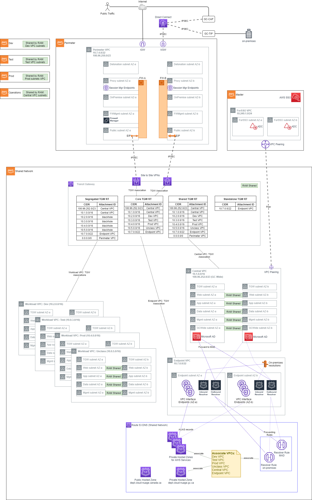
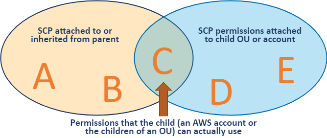

1. AWS Secure Environment Architecture
The AWS Secure Environment PBMM Architecture is a comprehensive, multi-account AWS cloud architecture, initially designed for use within the Government of Canada for PBMM workloads. The AWS Secure Environment PBMM Architecture has been designed to address central identity and access management, governance, data security, comprehensive logging, and network design/segmentation per Canadian Centre for Cyber Security ITSG-33 specifications (a NIST 800-53 variant).
This document specifically does NOT talk about the tooling or mechanisms that can be used to deploy the architecture. While the AWS Secure Environment Accelerator (SEA) is one tool capable of deploying this architecture (along with many other architectures), customers can use whatever mechanism they deem appropriate to deploy it. This document does not discuss the AWS SEA tooling or architecture and is strictly focused on the resulting deployed solution created by using the provided sample PBMM Accelerator configuration file. This architecture document should stand on its own in depicting the deployed architecture. Users looking for information on the SEA tooling itself, should refer to the other SEA documents.
It is anticipated we will offer multiple sample architectures with the AWS SEA solution, each having its own architecture document like this. As the SEA can produce hundreds of solutions, it does not make sense to repeat that content in this document.
2. Table of Contents
- 1. AWS Secure Environment Architecture
- 2. Table of Contents
- 3. Introduction
- 3.1. Purpose of Document
- 3.2. Overview
- 3.3. Document Convention
- 3.4. Department Naming
- 3.5. Relationship to AWS Landing Zone
- 4. Account Structure
- 4.1. Accounts
- 4.2. Organization Management (root) AWS Account
- 4.3. Mandatory Accounts
- 4.4. Functional Accounts
- 4.5. Account Level Settings
- 4.6. Private Marketplace
- 5. Networking
- 5.1. Overview
- 5.2. Perimeter
- 5.3. Shared Network
- 5.3.1. Transit Gateway
- 5.3.2. Endpoint VPC
- 5.3.3. Endpoint VPC: Interface Endpoints
- 5.3.4. Endpoint VPC: Hybrid DNS
- 5.3.4.1. Within The Cloud
- 5.3.4.2. From Cloud to On-Premises
- 5.3.4.3. From On-Premises to Cloud
- 5.3.5. Workload VPCs
- 5.3.5.1. Security Groups
- 5.3.5.2. NACLs
- 5.3.6. Central VPC
- 5.3.6.1. Domain Joining
- 5.3.7. Sandbox VPC
- 6. Authorization and Authentication
- 6.1. Relationship to the Organization Management (root) AWS Account
- 6.2. Break Glass Accounts
- 6.3. Control Plane Access via AWS SSO
- 6.4. Root Authorization
- 6.5. Service Roles
- 6.6. Service Control Policies
- 7. Logging and Monitoring
- 7.1. CloudTrail
- 7.2. VPC Flow Logs
- 7.3. GuardDuty
- 7.4. Config
- 7.5. Cloudwatch Logs
- 7.6. SecurityHub
- 7.7. Systems Manager Session Manager
3. Introduction
The AWS Secure Environment Architecture has been built with the following design principles:
- Maximize agility, scalability, and availability
- Enable the full capability of the AWS cloud
- Be adaptable to evolving technological capabilities in the underlying platform being used in the AWS Secure Environment Architecture
- Allow for seamless auto-scaling and provide unbounded bandwidth as bandwidth requirements increase (or decrease) based on actual customer load (a key aspect of the value proposition of cloud computing)
- Design for high availability: the design stretches across two physical AWS Availability Zones (AZ), such that the loss of any one AZ does not impact application availability. The design can be easily extended to a third availability zone.
- Operate as least privilege: all principals in the accounts are intended to operate with the lowest-feasible permission set.
3.1. Purpose of Document
This document is intended to outline the technical measures that are delivered by the AWS Secure Environment Architecture that make it suitable for PBMM workloads. An explicit non-goal of this document is to explain the delivery architecture of the AWS Secure Environment Accelerator tool itself, an open-source software project built by AWS.
While the central purpose of the AWS Secure Environment Accelerator is to establish an AWS Secure Environment Architecture into an AWS account footprint, this amounts to an implementation detail as far as the AWS Secure Environment Architecture is concerned. The AWS Secure Environment Architecture is a standalone design, irrespective of how it was delivered into a customer AWS environment. It is nonetheless anticipated that most customers will choose to realize their AWS Secure Environment Architecture via the delivery mechanism of the AWS Secure Environment Accelerator tool.
Comprehensive details on the tool itself are available elsewhere:
- AWS Secure Environment Accelerator tool Operations & Troubleshooting Guide
- AWS Secure Environment Accelerator tool Developer Guide
Except where absolutely necessary, this document will refrain from referencing the AWS Secure Environment Accelerator tool further.
3.2. Overview
The central features of the AWS Secure Environment Architecture are as follows:
- AWS Organization with multiple-accounts: An AWS Organization is a grouping construct for a number of separate AWS accounts that are controlled by a single customer entity. This provides consolidated billing, organizational units, and facilitates the deployment of pan-Organizational guardrails such as CloudTrail logs and Service Control Policies. The separate accounts provide strong control-plane and data-plane isolation between workloads and/or environments.
- Encryption: AWS KMS with customer-managed CMKs is used extensively for any data stored at rest, in S3 buckets, EBS volumes, RDS encryption.
- Service Control Policies: SCPs provide a guardrail mechanism principally used to deny entire categories of API operations at an AWS account, OU, or Organization level. These can be used to ensure workloads are deployed only in prescribed regions, ensure only whitelisted services are used, or prevent the disablement of detective/preventative controls. Prescriptive SCPs are provided.
- Centralized, Isolated Networking: Virtual Private Clouds (VPCs) are used to create data-plane isolation between workloads, centralized in a shared-network account. Connectivity to on-prem environments, internet egress, shared resources and AWS APIs are mediated at a central point of ingress/egress via the use of Transit Gateway, Site-to-Site VPN, Next-Gen Firewalls, and AWS Direct Connect (where applicable).
- Centralized DNS Management: Amazon Route 53 is used to provide unified public and private hosted zones across the cloud environment. Inbound and Outbound Route 53 Resolvers extend this unified view of DNS to on-premises networks.
- Comprehensive Logging: CloudTrail logs are enabled Organization-wide to provide auditability across the cloud environment. CloudWatch Logs, for applications, as well as VPC flow logs, are centralized and deletion is prevented via SCPs.
- Detective Security Controls: Potential security threats are surfaced across the cloud environment via automatic deployment of detective security controls such as GuardDuty, AWS Config, and Security Hub.
- Single-Sign-On: AWS SSO is used to provide AD-authenticated IAM role assumption into accounts across the Organization for authorized principals.
3.3. Document Convention
Several conventions are used throughout this document to aid understanding.
3.3.1. AWS Account Numbers
AWS account numbers are decimal-digit pseudorandom identifiers with 12 digits (e.g. 651278770121). This document will use the convention that an AWS Organization Management (root) account has the account ID 123456789012, and child accounts are given by 111111111111, 222222222222, etc.
For example the following ARN would refer to a VPC subnet in the ca-central-1 region in the Organization Management (root) account:
arn:aws:ec2:ca-central-1:123456789012:subnet/subnet-024759b61fc305ea3
3.3.2. JSON Annotation
Throughout the document, JSON snippets may be annotated with comments (starting with //). The JSON language itself does not define comments as part of the specification; these must be removed prior to use in most situations, including the AWS Console and APIs.
For example:
{
"Effect": "Allow",
"Principal": {
"AWS": "arn:aws:iam::123456789012:root" // Trust the Organization Management (root) account.
},
"Action": "sts:AssumeRole"
}
The above is not valid JSON without first removing the comment on the fourth line.
3.3.3. IP Addresses
The design makes use of RFC1918 addresses (e.g. 10.1.0.0/16) and RFC6598 (e.g. 100.96.250.0/23) for various networks; these will be labeled accordingly. Any specific range or IP shown is purely for illustration purposes only.
3.4. Department Naming
This document will make no reference to specific Government of Canada departments. Where naming is required (e.g. in domain names), this document will use a placeholder name as needed; e.g. dept.gc.ca.
3.5. Relationship to AWS Landing Zone
AWS Landing Zone is an AWS Solution designed to deploy multi-account cloud architectures for customers. The AWS Secure Environment Architecture draws on design patterns from Landing Zone, and re-uses several concepts and nomenclature, but it is not directly derived from it. An earlier internal release of the AWS Secure Environment Architecture presupposed the existence of an AWS Landing Zone in the Organization; this requirement has since been removed as of release v1.1.0.
4. Account Structure
AWS accounts are a strong isolation boundary; by default there is zero control plane or data plane access from one AWS account to another. AWS Organizations is a service that provides centralized billing across a fleet of accounts, and optionally, some integration-points for cross-account guardrails and cross-account resource sharing. The AWS Secure Environment Architecture uses these features of AWS Organizations to realize its design.
4.1. Accounts
The AWS Secure Environment Architecture includes the following AWS accounts.
Note that the account structure is strictly a control plane concept - nothing about this structure implies anything about the network design or network flows.

4.2. Organization Management (root) AWS Account
The AWS Organization resides in the Organization Management (root) AWS account. This account is not used for workloads (to the full extent possible) - it functions primarily as a billing aggregator, and a gateway to the entire cloud footprint for a high-trust principal. There exists a trust relationship between child AWS accounts in the Organization and the Organization Management (root) account; i.e. the child accounts have a role of this form:
{
"Role": {
"Path": "/",
"RoleName": "AWSCloudFormationStackSetExecutionRole",
"Arn": "arn:aws:iam::111111111111:role/AWSCloudFormationStackSetExecutionRole", // Child account.
"AssumeRolePolicyDocument": {
"Version": "2012-10-17",
"Statement": [
{
"Effect": "Allow",
"Principal": {
"AWS": "arn:aws:iam::123456789012:root" // Organization Management (root) account may assume this role.
},
"Action": "sts:AssumeRole"
}
]
}
}
}
Note that this is a different role name than the default installed by AWS Organizations (OrganizationAccountAccessRole).
4.2.1. AWS SSO
AWS SSO resides in the Organization Management (root) account in the organization, due to a current requirement of the AWS SSO service. This service deploys IAM roles into the accounts in the Organization. More details on SSO are available in the Authentication and Authorization section.
4.2.2. Organizational Units
Underneath the root of the Organization, Organizational Units (OUs) provide an optional mechanism for grouping accounts into logical collections. Aside from the benefit of the grouping itself, these collections serve as the attachment points for SCPs (preventative API-blocking controls), and Resource Access Manager sharing (cross-account resource sharing).

Example use cases are as follows:
- An SCP is attached to the core OU to prevent the deletion of Transit Gateway resources in the associated accounts.
- The shared network account uses RAM sharing to share the development line-of-business VPC with a development OU. This makes the VPC available to a functional account in that OU used by developers, despite residing logically in the shared network account.
OUs may be nested (to a total depth of five), with SCPs and RAM sharing applied at the desired level. A typical AWS Secure Environment Architecture environment will have the following OUs:
4.2.2.1. Core OU
This OU houses all administrative accounts, such as the core landing zone accounts. No application accounts or application workloads are intended to exist within this OU. This OU also contains the centralized networking infrastructure in the SharedNetwork account.
4.2.2.2. Central OU
This OU houses accounts containing centralized resources, such as a shared AWS Directory Service (Microsoft AD) instance. Other shared resources such as software development tooling (source control, testing infrastructure), or asset repositories should be created in this OU.
4.2.2.3. Functional OU: Sandbox
This OU contains a set of Sandbox accounts used by development teams for proof of concept / prototyping work. These accounts are isolated at a network level and are not connected to the VPCs hosting development, test and production workloads. These accounts have direct internet access via an internet gateway (IGW). They do not route through the Perimeter Security services VPC for internet access.
4.2.2.4. Functional OU: UnClass
Accounts in this OU host unclassified application solutions. These accounts have internet access via the Perimeter firewall. This is an appropriate place to do cross-account unclassified collaboration with other departments or entities, or test services that are not available in the Canadian region.
4.2.2.5. Functional OU: Dev
Accounts in this OU host development tools and line of business application solutions that are part of approved releases and projects. These accounts have internet access via the Perimeter firewall.
4.2.2.6. Functional OU: Test
Accounts in this OU host test tools and line of business application solutions that are part of approved releases and projects. These accounts have internet access via the Perimeter firewall.
4.2.2.7. Functional OU: Prod
Accounts in this OU host production tools and line of business application solutions that are part of approved releases and projects. These accounts have internet access via the Perimeter firewall. Accounts in this OU are locked down with only specific Operations and Security personnel having access.
4.2.2.8. Suspended OU
A suspended OU is created to act as a container for end-of-life accounts or accounts with suspected credential leakage. The DenyAll SCP is applied, which prevents all control-plane API operations from taking place by any account principal.
4.3. Mandatory Accounts
The AWS Secure Environment Architecture is an opinionated design, which partly manifests in the accounts that are deemed mandatory within the Organization. The following accounts are assumed to exist, and each has an important function with respect to the goals of the overall Architecture (mandatory in red)

4.3.1. Organization Management (root)
As discussed above, the Organization Management (root) account functions as the root of the AWS Organization, the billing aggregator, attachment point for SCPs. Workloads are not intended to run in this account.
Note: Customers deploying the AWS Secure Environment Architecture via the AWS Secure Environment Accelerator will deploy into this account. See the Operations Guide for more details.
4.3.2. Perimeter
The perimeter account, and in particular the perimeter VPC therein, functions as the single point of ingress/egress from the PBMM cloud environment to the public internet and/or on-premises network. This provides a central point of network control through which all workload-generated traffic, ingress and egress, must transit. The perimeter VPC hosts next-generation firewall instances that provide security services such as virus scanning, malware protection, intrusion protection, TLS inspection, and web application firewall functionality. More details on can be found in the Networking section of this document.
4.3.3. Shared Network
The shared network account hosts the vast majority of the AWS-side of the networking resources throughout the AWS Secure Environment Architecture. Workload-scoped VPCs (Dev, Test, Prod, etc) are defined here, and shared via RAM sharing to the respective OUs in the Organization. A Transit Gateway provides connectivity from the workloads to the internet or on-prem, without permitting cross-environment (AKA "East:West traffic") traffic (e.g. there is no Transit Gateway route from the Dev VPC to the Prod VPC). More details on can be found in the Networking section of this document.
4.3.4. Operations
The operations account provides a central location for the cloud team to provide cloud operation services to other AWS accounts within the Organization and is where an organizations cloud operations team "hangs out" or delivers tooling applicable across all accounts in the organization. It provides ViewOnly access to CloudWatch logs and metrics across the organization. It's where centralized Systems Manager Session Manager Automation (remediation) documents are located. It's where organizations centralize backup automation (if automated), SSM inventory and patch jobs, and where AWS Managed Active Directory would typically be deployed and accessible to all workloads in the organization. In some AWS documentation this is referred to as the Shared Services account.
4.3.5. Log Archive
The log archive account provides a central aggregation and secure storage point for all audit logs created within the AWS Organization. This account contains a centralized location for copies of every account’s Audit and Configuration compliance logs. It also provides a storage location for any other audit/compliance logs, as well as application/OS logs.
The AWS CloudTrail service provides a full audit history of all actions taken against AWS services, including users logging into accounts. We recommend access to this account be restricted to auditors or security teams for compliance and forensic investigations related to account activity. Additional CloudTrail trails for operational use can be created in each account.
4.3.6. Security
The security account is restricted to authorized security and compliance personnel, and related security or audit tools. This is an aggregation point for security services, including AWS Security Hub, and serves as the Organization Management (root) for Amazon Guard Duty. A trust relationship with a readonly permission policy exists between every Organization account and the security account for audit and compliance purposes.
4.3.7. DevOps account and/or Shared Team accounts
Used to deliver CI/CD capabilities - two patterns are depicted in the architecture diagrams - The first has a single org wide central CI/CD tooling account, the other has a CI/CD and shared tooling account per major application team/grouping of teams/applications. Which is used will depend entirely on the org size, maturity model, delegation model of the organization and their team structures. We would generally still recommend CI/CD tooling in each developer account (i.e. using Code Commit) and when certain branch names were leveraged, causes the branch/PR to be automatically pulled into the centralized CI/CD tooling account and the approvals and promotion process which will push the code through the SDLC cycle to Test and Prod accounts, etc. Refer to this blog for more details on automating this pattern.
4.4. Functional Accounts
Functional accounts are created on demand, and placed into an appropriate OU in the Organization structure. The purpose of functional accounts is to provide a secure and managed environment where project teams can use AWS resources. They provide an isolated control plane so that the actions of one team in one account cannot inadvertently affect the work of other teams in other accounts.
Functional accounts will gain access to the RAM shared resources of their respective parent OU. Accounts created for systemA and systemB in the Dev OU would have control plane isolation from each other; however these would both have access to the Dev VPC (shared from the SharedNetwork account).
Data plane isolation within the same VPC is achieved by default, by using appropriate security groups whenever ingress is warranted. For example, the app tier of systemA should only permit ingress from the systemA-web security group, not an overly broad range such as 0.0.0.0/0, or even the VPC range.
4.5. Account Level Settings
The AWS Secure Environment Architecture recommends the enabling of certain account-wide features on account creation. Namely, these include:
4.6. Private Marketplace
The AWS Secure Environment Architecture recommends that the AWS Private Marketplace is enabled for the Organization. Private Marketplace helps administrators govern which products they want their users to run on AWS by making it possible to see only products that comply with their organization's procurement policy. When Private Marketplace is enabled, it will replace the standard AWS Marketplace for all users.

5. Networking
5.1. Overview
The AWS Secure Environment Architecture networking is built on a principle of centralized on-premises and Internet ingress/egress, while enforcing data plane isolation between workloads in different environments. Connectivity to on-prem environments, internet egress, shared resources and AWS APIs are mediated at a central point of ingress/egress via the use of a Transit Gateway. Consider the following overall network diagram:

All functional accounts use RAM-shared networking infrastructure as depicted above. The workload VPCs (Dev, Test, Prod, etc) are hosted in the Shared Network account and made available to the appropriate OU in the Organization.
5.2. Perimeter
The perimeter VPC hosts the Organization's perimeter security services. The Perimeter VPC is used to control the flow of traffic between AWS Accounts and external networks for IaaS workloads: both public (internet) and in some cases private (access to on-premises datacenters). This VPC hosts Next Generation Firewalls (NGFW) that provide perimeter security services including virus scanning / malware protection, Intrusion Protection services, TLS Inspection and Web Application Firewall protection. If applicable, this VPC also hosts reverse proxy servers.
Note that this VPC is in its own isolated account, separate from Shared Network, in order to facilitate networking and security 'separation of duties'. Internal networking teams may administer the cloud networks in Shared Network without being granted permission to administer the security perimeter itself.
5.2.1. IP Ranges
- Primary Range: The AWS Secure Environment Architecture recommends that the perimeter VPC have a primary range in the RFC1918 block (e.g.
10.7.4.0/22), used only for subnets dedicated to 'detonation' purposes. This primary range, in an otherwise-unused RFC1918 range, is not intended to be routable outside of the VPC, and is reserved for future use with malware detonation capabilities of NGFW devices. - Secondary Range: This VPC should also have a secondary range in the RFC6598 block (e.g.
100.96.250.0/23) used for the overlay network (NGFW devices inside VPN tunnel) for all other subnets. This secondary range is assigned by an external entity (e.g. Shared Services Canada), and should be carefully selected in order to co-exist with AWS Secure Environment Architecture deployments that exist at peer organizations; for instance other government departments that maintain a relationship with the same shared entity in a carrier-grade NAT topology. Although this is a 'secondary' range in VPC parlance, this VPC CIDR should be interpreted as the more 'significant' of the two with respect to Transit Gateway routing; the Transit Gateway will only ever interact with this 'secondary' range.

This VPC has four subnets per AZ, each of which hosts a port used by the NGFW devices, which are deployed in an HA pair. The purpose of these subnets is as follows.
- Detonation: This is an unused subnet reserved for future use with malware detonation capabilities of the NGFW devices.
- e.g.
10.7.4.0/24- not routable except local. - Proxy: This subnet hosts reverse proxy services for web and other protocols. It also contains the three interface endpoints necessary for AWS Systems Manager Session Manager, which enables SSH-less CLI access to authorized and authenticated principals in the perimeter account.
- e.g.
100.96.251.64/26 - On-Premises: This subnet hosts the private interfaces of the firewalls, corresponding to connections from the on-premises network.
- e.g.
100.96.250.192/26 - FW-Management: This subnet is used to host management tools and the management of the Firewalls itself.
- e.g.
100.96.251.160/27- a smaller subnet is permissible due to modest IP requirements for management instances. - Public: This subnet is the public-access zone for the perimeter VPC. It hosts the public interface of the firewalls, as well as application load balancers that are used to balance traffic across the firewall pair. There is one Elastic IPv4 address per public subnet that corresponds to the IPSec Customer Gateway (CGW) for the VPN connections into the Transit Gateway in Shared Networking.
- e.g.
100.96.250.0/26
Outbound internet connections (for software updates, etc.) can be initiated from within the workload VPCs, and use the transparent proxy feature of the next-gen Firewalls.
Note on VPN Tunnel Redundancy: Each NGFW device manifests as a unique CGW on the AWS side (shared network account) of the IPSec VPNs. Moreover, there are two Site-to-Site VPNs in this architecture, each with one active tunnel (and one inactive tunnel); taken together, the pair is redundant. In many hybrid networking configurations, a single Site-to-Site VPN resource is used with dual active tunnels. Customers may receive the following email notification from the AWS VPC service team:
You're receiving this message because you have at least one VPN Connection in the ca-central-1 Region, for which your VPN Customer Gateway is not using both tunnels. This mode of operation is not recommended as you may experience connectivity issues if your active tunnel fails.
This message may be disregarded, as it is premised on a traditional hybrid configuration with dual tunnels. Customers may create a VPN support case (in shared network account) requesting that these informational emails are disabled.
5.3. Shared Network
The shared network account, and the AWS networking resources therein, form the core of the cloud networking infrastructure across the account structure. Rather than the individual accounts defining their own networks, these are instead centralized here and shared out to the relevant OUs. Principals in a Dev OU will have access to a Dev VPC, Test OU will have access to a Test VPC and so on - all of which are owned by this account.
You can share AWS Transit Gateways, Subnets, AWS License Manager configurations, and Amazon Route 53 Resolver rules resources with AWS Resource Access Manager (RAM). The RAM service eliminates the need to create duplicate resources in multiple accounts, reducing the operational overhead of managing those resources in every single account.
5.3.1. Transit Gateway
The Transit Gateway is a central hub that performs several core functions within the Shared Network account.
- Routing of permitted flows; for example a Workload to On-premises via the Perimeter VPC.
- All routing tables in SharedNetwork VPCs send
0.0.0.0/0traffic to the TGW, where its handling will be determined by the TGW Route Table (TGW-RT) that its attachment is associated with. For example:- an HTTP request to
registry.hub.docker.comfrom the Test VPC will go to the TGW - The Segregated TGW RT will direct that traffic to the Perimeter VPC via the IPsec VPNs
- The request will be proxied to the internet, via GC-CAP if appropriate
- The return traffic will again transit the IPsec VPNs
- The
10.3.0.0/16bound response traffic will arrive at the Core TGW RT, where a propagation in that TGW RT will direct the response back to the Test VPC.
- an HTTP request to
- Defining separate routing domains that prohibit undesired east-west flows at the network level; for example, by prohibiting Dev to Prod traffic. For example:
- All routing tables in SharedNetwork VPCs send
0.0.0.0/0traffic to the TGW, which defines where the next permissible hop is. For example,10.2.0.0/16Dev traffic destined for the10.0.4.0/16Prod VPC will be blocked by the blackhole route in the Segregated TGW RT. - Enabling centralization of shared resources; namely a shared Microsoft AD installation in the Central VPC, and access to shared VPC Endpoints in the Endpoint VPC.
- The Central VPC, and the Endpoint VPC are routable from Workload VPCs. This provides an economical way to share Organization wide resources that are nonetheless isolated into their own VPCs. For example:
- a
gitrequest in theDevVPC togit.private-domain.caresolves to a10.1.0.0/16address in theCentralVPC. - The request from the
DevVPC will go to the TGW due to the VPC routing table associated with that subnet - The TGW will send the request to the
CentralVPC via an entry in the Segregated TGW RT - The
gitresponse will go to the TGW due to the VPC routing table associated with that subnet - The Shared TGW RT will direct the response back to the
DevVPC
- a
The four TGW RTs exist to serve the following main functions:
- Segregated TGW RT: Used as the association table for the workload VPCs; prevents east-west traffic, except to shared resources.
- Core TGW RT: Used for internet/on-premises response traffic, and Endpoint VPC egress.
- Shared TGW RT: Used to provide
CentralVPC access east-west for the purposes of response traffic to shared workloads - Standalone TGW RT: Reserved for future use. Prevents TGW routing except to the Endpoint VPC.
Note that a unique BGP ASN will need to be available for the TGW.
5.3.2. Endpoint VPC
DNS functionality for the network architecture is centralized in the Endpoint VPC. It is recommended that the Endpoint VPC use a RFC1918 range - e.g. 10.7.0.0/22 with sufficient capacity to support 60+ AWS services and future endpoint expansion, and inbound and outbound resolvers (all figures per AZ).

5.3.3. Endpoint VPC: Interface Endpoints
The endpoint VPC hosts VPC Interface Endpoints (VPCEs) and associated Route 53 private hosted zones for all applicable services in the ca-central-1 region. This permits traffic destined for an eligible AWS service; for example SQS, to remain entirely within the SharedNetwork account rather than transiting via the IPv4 public endpoint for the service:

From within an associated workload VPC such as Dev, the service endpoint (e.g. sqs.ca-central-1.amazonaws.com) will resolve to an IP in the Endpoint VPC:
sh-4.2$ nslookup sqs.ca-central-1.amazonaws.com
Server: 10.2.0.2 # Dev VPC's .2 resolver.
Address: 10.2.0.2#53
Non-authoritative answer:
Name: sqs.ca-central-1.amazonaws.com
Address: 10.7.1.190 # IP in Endpoint VPC - AZ-a.
Name: sqs.ca-central-1.amazonaws.com
Address: 10.7.0.135 # IP in Endpoint VPC - AZ-b.
This cross-VPC resolution of the service-specific private hosted zone functions via the association of each VPC to each private hosted zone, as depicted above.
5.3.4. Endpoint VPC: Hybrid DNS
The Endpoint VPC also hosts the common DNS infrastructure used to resolve DNS queries:
- within the cloud
- from the cloud to on-premises
- from on-premises to the cloud
5.3.4.1. Within The Cloud
In-cloud DNS resolution applies beyond the DNS infrastructure that is put in place to support the Interface Endpoints for the AWS services in-region. Other DNS zones, associated with the Endpoint VPC, are resolvable the same way via an association to workload VPCs.
5.3.4.2. From Cloud to On-Premises
DNS Resolution from the cloud to on-premises is handled via the use of a Route 53 Outbound Endpoint, deployed in the Endpoint VPC, with an associated Resolver rule that forwards DNS traffic to the outbound endpoint. Each VPC is associated to this rule.

5.3.4.3. From On-Premises to Cloud
Conditional forwarding from on-premises networks is made possible via the use of a Route 53 Inbound Endpoint. On-prem networks send resolution requests for relevant domains to the endpoints deployed in the Endpoint VPC:

5.3.5. Workload VPCs
The workload VPCs are where line of business applications ultimately reside, segmented by environment (Dev, Test, Prod, etc). It is recommended that the Workload VPC use a RFC1918 range (e.g. 10.2.0.0/16 for Dev, 10.3.0.0/16 for Test, etc).

Note that security groups are recommended as the primary data-plane isolation mechanism between applications that may coexist in the same VPC. It is anticipated that unrelated applications would coexist in their respective tiers without ever permitting east-west traffic flows.
The following subnets are defined by the AWS Secure Environment Architecture:
- TGW subnet: This subnet hosts the elastic-network interfaces for the TGW attachment. A
/27subnet is sufficient. - Web subnet: This subnet hosts front-end or otherwise 'client' facing infrastructure. A
/20or larger subnet is recommended to facilitate auto-scaling. - App subnet: This subnet hosts app-tier code (EC2, containers, etc). A
/19or larger subnet is recommended to facilitate auto-scaling. - Data subnet: This subnet hosts data-tier code (RDS instances, ElastiCache instances). A
/21or larger subnet is recommended. - Mgmt subnet: This subnet hosts bastion or other management instances. A
/21or larger subnet is recommended.
Each subnet is associated with a Common VPC Route Table, as depicted above. Gateway Endpoints for relevant services (Amazon S3, Amazon DynamoDB) are installed in the Common route tables of all Workload VPCs. Aside from local traffic or gateway-bound traffic, 0.0.0.0/0 is always destined for the TGW.
5.3.5.1. Security Groups
Security Groups are instance level firewalls, and represent a foundational unit of network segmentation across AWS networking. Security groups are stateful, and support ingress/egress rules based on protocols and source/destinations. While CIDR ranges are supported by the latter, it is preferable to instead use other security groups as source/destinations. This permits a higher level of expressiveness that is not coupled to particular CIDR choices and works well with autoscaling; e.g.
"permit port 3306 traffic from the
Apptier to theDatatier"
versus
"permit port 3306 traffic from
10.0.1.0/24to10.0.2.0/24.
Security group egress rules are often used in 'allow all' mode (0.0.0.0/0), with the focus primarily being on consistently whitelisting required ingress traffic. This ensures day to day activities like patching, access to DNS, or to directory services access can function on instances without friction. The provided sample security groups in the workload accounts offers a good balance that considers both security, ease of operations, and frictionless development. They allow developers to focus on developing, enabling them to simply use the pre-created security constructs for their workloads, and avoid the creation of wide-open security groups. Developers can equally choose to create more appropriate least-privilege security groups more suitable for their application, if they are skilled in this area. It is expected as an application is promoted through the SDLC cycle from Dev through Test to Prod, these security groups will be further refined by the extended customers teams to further reduce privilege, as appropriate. It is expected that each customer will review and tailor their Security Groups based on their own security requirements.
5.3.5.2. NACLs
Network Access-Control Lists (NACLs) are stateless constructs used sparingly as a defense-in-depth measure in this architecture. AWS generally discourages the use of NACLs given the added complexity and management burden, given the availability and ease of use provided by security groups. Each network flow often requires four NACL entries (egress from ephemeral, ingress to destination, egress from destination, ingress to ephemeral). The architecture recommends NACLs as a segmentation mechanism for Data subnets; i.e. DENY all inbound traffic to such a subnet except that which originates in the App subnet for the same VPC. As with security groups, we encourage customers to review and tailor their NACLs based on their own security requirements.
5.3.6. Central VPC
The Central VPC is a network for localizing operational infrastructure that may be needed across the Organization, such as code repositories, artifact repositories, and notably, the managed Directory Service (Microsoft AD). Instances that are domain joined will connect to this AD domain - a network flow that is made possible from anywhere in the network structure due to the inclusion of the Central VPC in all relevant association TGW RTs.
It is recommended that the Central VPC use a RFC1918 range (e.g. 10.1.0.0/16) for the purposes of routing from the workload VPCs, and a secondary range from the RFC6598 block (e.g. 100.96.252.0/23) to support the Microsoft AD workload.
Note that this VPC also contains a peering relationship to the ForSSO VPC in the Organization Management (root) account. This exists purely to support connectivity from an AD-Connector instance in the Organization Management (root) account, which in turn enables AWS SSO for federated login to the AWS control plane.

5.3.6.1. Domain Joining
An EC2 instance deployed in the Workload VPCs can join the domain corresponding to the Microsoft AD in Central provided the following conditions are all true:
- The instance needs a network path to the Central VPC (given by the Segregated TGW RT), and appropriate security group assignment
- The Microsoft AD should be 'shared' with the account the EC2 instance resides in (The AWS Secure Environment Architecture recommends these directories are shared to workload accounts)
- The instance has the AWS managed policies
AmazonSSMManagedInstanceCoreandAmazonSSMDirectoryServiceAccessattached to its IAM role, or runs under a role with at least the permission policies given by the combination of these two managed policies. - The EC2's VPC has an associated resolver rule that directs DNS queries for the AD domain to the Central VPC.
5.3.7. Sandbox VPC
A sandbox VPC, not depicted, may be included in the AWS Secure Environment Architecture. This is not connected to the Transit Gateway, Perimeter VPC, on-premises network, or other common infrastructure. It contains its own Internet Gateway, and is an entirely separate VPC with respect to the rest of the AWS Secure Environment Architecture.
The sandbox VPC should be used exclusively for time-limited experimentation, particularly with out-of-region services, and never used for any line of business workload or data.
6. Authorization and Authentication
The AWS Secure Environment Architecture makes extensive use of AWS authorization and authentication primitives from the Identity and Access Management (IAM) service as a means to enforce the guardrail objectives of the AWS Secure Environment Architecture, and govern access to the set of accounts that makes up the Organization.
6.1. Relationship to the Organization Management (root) AWS Account
AWS accounts, as a default position, are entirely self-contained with respect to IAM principals - their Users, Roles, Groups are independent and scoped only to themselves. Accounts created by AWS Organizations deploy a default role with a trust policy back to the Organization Management (root). By default, this role is named the OrganizationAccountAccessRole; by contrast, the AWS Secure Environment Architecture allows customers to customize this role by defining it in organization-admin-role (default: AWSCloudFormationStackSetAdministrationRole).
{
"Role": {
"Path": "/",
"RoleName": "AWSCloudFormationStackSetExecutionRole",
"Arn": "arn:aws:iam::111111111111:role/AWSCloudFormationStackSetExecutionRole", // Child account.
"AssumeRolePolicyDocument": {
"Version": "2012-10-17",
"Statement": [
{
"Effect": "Allow",
"Principal": {
"AWS": "arn:aws:iam::123456789012:root" // Organization Management (root) account may assume this role.
},
"Action": "sts:AssumeRole"
}
]
}
}
}
As discussed, the AWS Organization resides in the Organization Management (root) account. This account is not used for workloads and is primarily a gateway to the entire cloud footprint for a high-trust principal. This is realized via the role defined in organization-admin-role (default: AWSCloudFormationStackSetAdministrationRole). It is therefore crucial that the Organization Management (root) account root credentials be handled with extreme diligence, and with a U2F hardware key enabled as a second-factor (and stored in a secure location such as a safe).
6.2. Break Glass Accounts
Given the Organizational-wide trust relationship to the role defined in organization-admin-role (default: AWSCloudFormationStackSetAdministrationRole) and its broad exclusion from SCPs (discussed below), the assumption of this role grants 'super admin' status, and is thus an extremely high privilege operation. The ability to assume this role should be considered a 'break glass' capability - to be used only in extraordinary circumstances. Access to this role can be granted by IAM Users or IAM Roles in the Organization Management (root) account (via SSO) - as with the Organization Management (root) account credentials, these should be handled with extreme diligence, and with a U2F hardware key enabled as a second-factor (and stored in a secure location such as a safe).
TBD: This role was locked down starting in v1.2.5 - Add further details here /TODO
6.3. Control Plane Access via AWS SSO
The vast majority of end-users of the AWS cloud within the Organization will never use or interact with the Organization Management (root) account, or indeed the root users of any child account in the Organization. The AWS Secure Environment Architecture recommends instead that AWS SSO be provisioned in the Organization Management (root) account (a rare case where Organization Management (root) account deployment is mandated).
Users will login to AWS via the web-based endpoint for the AWS SSO service:

Via an AWS Directory Connector deployed in the Organization Management (root) account, AWS SSO will authenticate the user based on the underlying Microsoft AD installation (in the Central account). Based on group membership, the user will be presented with a set of roles to assume into those accounts. For example, a developer may be placed into groups that permit Admin access in the Dev account and Readonly access in Test; meanwhile an IT Director may have high-privilege access to most, or all, accounts. In effect, AWS SSO adds SAML IdP capabilities to the AWS Managed Microsoft AD, with the AWS Console acting as a service-provider (SP) in SAML parlance. Other SAML-aware SPs may also be used with AWS SSO.
6.3.1. SSO User Roles
AWS SSO creates an identity provider (IdP) in each account in the Organization. The roles used by end users have a trust policy to this IdP. When a user authenticates to AWS SSO (via the underlying AD Connector) and selects a role to assume based on their group membership, the SSO service provides the user with temporary security credentials unique to the role session. In such a scenario, the user has no long-term credentials (e.g. password, or access keys) and instead uses their temporary security credentials.
Users, via their AD group membership, are ultimately assigned to SSO User Roles via the use of AWS SSO Permission Sets. A permission set is an assignment of a particular permission policy to a set of accounts. For example:
An organization might decide to use AWS Managed Policies for Job Functions that are located within the SSO service as the baseline for role-based-access-control (RBAC) separation within an AWS account. This enables job function policies such as:
- Administrator - This policy grants almost all actions for all AWS services and for all resources in the account.
- Developer Power User - This user performs application development tasks and can create and configure resources and services that support AWS aware application development.
- Database Administrator - This policy grants permissions to create, configure, and maintain databases. It includes access to AWS database services, such as Amazon DynamoDB, Amazon Relational Database Service (RDS), and Amazon Redshift.
- View-Only User - This policy grants
List*,Describe*,Get*,View*, andLookup*access to resources for most AWS services.
6.3.2. Principal Authorization
Having assumed a role, a user’s permission-level within an AWS account with respect to any API operation is governed by the IAM policy evaluation logic flow (detailed here):

Having an Allow to a particular API operation from the Role (i.e. Session Policy) does not necessarily imply that API operation will succeed. As depicted above, Deny may result due to another evaluation stage in the logic; for example a restrictive permission boundary or an explicit Deny at the Resource or SCP (account) level. SCPs are used extensively as a guardrailing mechanism in the AWS Secure Environment Architecture, and are discussed in a later section.
6.4. Root Authorization
Root credentials for individual accounts in an AWS organization may be created on demand via a password reset process on the unique account email address; however, the AWS Secure Environment Architecture specifically denies this via SCP. Root credentials authorize all actions for all AWS services and for all resources in the account (except anything denied by SCPs). There are some actions which only root has the capability to perform which are found within the AWS online documentation. These are typically rare operations (e.g. creation of X.509 keys), and should not be required in the normal course of business. Any root credentials, if ever they need to be created, should be handled with extreme diligence, with U2F MFA enabled.
6.5. Service Roles
A service role is an IAM Role that a service assumes to perform actions in an account on the user’s behalf. When a user sets up AWS service environments, the user must define an IAM Role for the service to assume. This service role must include all the permissions that are required for the service to access the AWS resources that it needs. Service roles provide access only within a single account and cannot be used to grant access to services in other accounts. Users can create, modify, and delete a service role from within the IAM service. For example, a user can create a role that allows Amazon Redshift to access an Amazon S3 bucket on the user’s behalf and then load data from that bucket into an Amazon Redshift cluster. In the case of SSO, during the process in which AWS SSO is enabled, the AWS Organizations service grants AWS SSO the necessary permissions to create subsequent IAM Roles.
6.6. Service Control Policies
Service Control Policies are a key preventative control recommended by the AWS Secure Environment Architecture. It is crucial to note that SCPs, by themselves, never grant permissions. They are most often used to Deny certain actions at a root, OU, or account level within an AWS Organization. Since Deny always overrides Allow in the IAM policy evaluation logic, SCPs can have a powerful effect on all principals in an account, and can wholesale deny entire categories of actions irrespective of the permission policy attached to the principal itself - even the root user of the account.
SCPs follow an inheritance pattern from the root of the Organization:

In order for any principal to be able to perform an action A, it is necessary (but not sufficient) that there is an Allow on action A from all levels of the hierarchy down to the account, and no explicit Deny anywhere. This is discussed in further detail in How SCPs Work.
The AWS Secure Environment Architecture recommends the following SCPs in the Organization:
6.6.1. PBMM Only
This is a comprehensive policy whose main goal is to provide a PBMM-compliant cloud environment, namely prohibiting any non-centralized networking, and mandating data residency in Canada. It should be attached to all non-Unclass OUs.
| Policy Statement ID (SID) | Description |
|---|---|
DenyNetworkPBMMONLY |
Prevents the creation of any networking infrastructure in the workload accounts such as VPCs, NATs, VPC peers, etc. |
DenyAllOutsideCanadaPBMMONLY |
Prevents the use of any service in any non-Canadian AWS region with the exception of services that are considered global; e.g. CloudFront, IAM, STS, etc |
ScopeSpecificGlobalActionsToCanadaUSE1 |
Within services that are exempted from DenyAllOutsideCanadaPBMMONLY, scope the use of those services to the us-east-1 region |
6.6.2. PBMM Unclass Only
This is broadly similar to PBMM Only; however it relaxes the requirement for Canadian region usage, and does not prohibit network infrastructure creation (e.g. VPCs, IGWs). This is appropriate for OUs in which AWS service experimentation is taking place.
| Policy Statement ID (SID) | Description |
|---|---|
DenyUnclass |
Prevents the deletion of KMS encryption keys and IAM password policies |
DenyAllOutsideCanadaUS |
Prevents the use of any service in any region that is not ca-central-1 or us-east-1, with the exception of services that are considered global; e.g. CloudFront, IAM, STS, etc |
6.6.3. PBMM Guardrails (Parts 1 and 2)
PBMM Guardrails apply across the Organization. These guardrails protect key infrastructure, mandate encryption at rest, and prevent other non-PBMM configurations. Note that this guardrail is split into two parts due to a current limitation of SCP sizing, but logically it should be considered a single policy.
| Policy Statement ID (SID) | Description |
|---|---|
DenyTag1 |
Prevents modification of any protected security group |
DenyTag2 |
Prevents modification of any protected IAM resource |
DenyS3 |
Prevents modification of any S3 bucket used for Accelerator purposes |
ProtectCloudFormation |
Prevents modification of any CloudFormation stack used for Accelerator tool purposes |
DenyAlarmDeletion |
Prevents modification of any cloudwatch alarm used to alert on significant control plane events |
ProtectKeyRoles |
Prevents any IAM operation on Accelerator tool IAM roles |
DenySSMDel |
Prevents modification of any ssm resource used for Accelerator tool purposes |
DenyLogDel |
Prevents the deletion of any log resource in Cloudwatch Logs |
DenyLeaveOrg |
Prevents an account from leaving the Organization |
DenyLambdaDel |
Prevents the modification of any guardrail Lambda function |
BlockOther |
Prevents miscellaneous operations; e.g. Deny ds:DisableSso |
BlockMarketplacePMP |
Prevents the modification or creation of a cloud private marketplace |
DenyRoot |
Prevents the use of the root user in an account |
EnforceEbsEncryption |
Enforces the use of volume level encryption in running instances |
EnforceEBSVolumeEncryption |
Enforces the use of volume level encryption with EBS |
EnforceRdsEncryption |
Enforces the use of RDS encryption |
EnforceAuroraEncryption |
Enforces the use of Aurora encryption |
DenyRDGWRole |
Prevents the modification of a role used for Remote Desktop Gateway |
DenyGDSHFMAAChange |
Prevents the modification of GuardDuty & Security Hub |
6.6.3.1. Encryption at Rest
Note that the *Encryption* SCP statements above, taken together, mandate encryption at rest for block storage volumes used in EC2 and RDS instances.
6.6.4. Quarantine Deny All
This policy can be attached to an account to 'quarantine' it - to prevent any AWS operation from taking place. This is useful in the case of an account with credentials which are believed to have been compromised.
| Policy Statement ID (SID) | Description |
|---|---|
DenyAllAWSServicesExceptBreakglassRoles |
Blanket denial on all AWS control plane operations for all non-break-glass roles |
6.6.5. Quarantine New Object
This policy is applied to new accounts upon creation. After the installation of guardrails, it is removed. In the meantime, it prevents all AWS control plane operations except by principals required to deploy guardrails.
| Policy Statement ID (SID) | Description |
|---|---|
DenyAllAWSServicesExceptBreakglassRoles |
Blanket denial on all AWS control plane operations for all non-break-glass roles |
7. Logging and Monitoring
The AWS Secure Environment Architecture recommends the following detective controls across the Organization. These controls, taken together, provide a comprehensive picture of the full set of control plane and data plane operations across the set of accounts.
7.1. CloudTrail
A CloudTrail Organizational trail should be deployed into the Organization. For each account, this captures management events and optionally S3 data plane events taking place by every principal in the account. These records are sent to an S3 bucket in the log archive account, and the trail itself cannot be modified or deleted by any principal in any child account. This provides an audit trail for detective purposes in the event of the need for forensic analysis into account usage. The logs themselves provide an integrity guarantee: every hour, CloudTrail produces a digest of that hour's logs files, and signs with its own private key. The authenticity of the logs may be verified using the corresponding public key. This process is detailed here.
7.2. VPC Flow Logs
VPC Flow Logs capture information about the IP traffic going to and from network interfaces in an AWS Account VPC such as source and destination IPs, protocol, ports, and success/failure of the flow. The AWS Secure Environment Architecture recommends enabling ALL (i.e. both accepted and rejected traffic) logs for all VPCs in the Shared Network account with an S3 destination in the log-archive account. More details about VPC Flow Logs are available here.
Note that certain categories of network flows are not captured, including traffic to and from Traffic to and from 169.254.169.254 for instance metadata, and DNS traffic with an Amazon VPC resolver.
7.3. GuardDuty
Amazon GuardDuty is a threat detection service that continuously monitors for malicious activity and unauthorized behavior to protect your AWS accounts and workloads. The service uses machine learning, anomaly detection, and integrated threat intelligence to identify and prioritize potential threats. GuardDuty uses a number of data sources including VPC Flow Logs and CloudTrail logs.
The AWS Secure Environment Architecture recommends enabling GuardDuty at the Organization level, and delegating the security account as the GuardDuty Administrative account. The GuardDuty Administrative account should be auto-enabled to add new accounts as they come online. Note that this should be done in every region as a defense in depth measure, with the understanding that the PBMM SCP will prevent service usage in all other regions.
7.4. Config
AWS Config provides a detailed view of the resources associated with each account in the AWS Organization, including how they are configured, how they are related to one another, and how the configurations have changed on a recurring basis. Resources can be evaluated on the basis of their compliance with Config Rules - for example, a Config Rule might continually examine EBS volumes and check that they are encrypted.
Config may be enabled at the Organization level - this provides an overall view of the compliance status of all resources across the Organization.
Note: At the time of writing, the Config Multi-Account Multi-Region Data Aggregation sits in the Organization Management (root) account. The AWS Secure Environment Architecture will recommend that this be situated in the security account, once that becomes easily-configurable in Organizations.
7.5. Cloudwatch Logs
CloudWatch Logs is AWS' logging aggregator service, used to monitor, store, and access log files from EC2 instances, AWS CloudTrail, Route 53, and other sources. The AWS Secure Environment Architecture recommends that log subscriptions are created for all log groups in all workload accounts, and streamed into S3 in the log-archive account (via Kinesis) for analysis and long-term audit purposes.
7.6. SecurityHub
The primary dashboard for Operators to assess the security posture of the AWS footprint is the centralized AWS Security Hub service. Security Hub should be configured to aggregate findings from Amazon GuardDuty, AWS Config and IAM Access Analyzers. Events from security integrations are correlated and displayed on the Security Hub dashboard as 'findings' with a severity level (informational, low, medium, high, critical).
The AWS Secure Environment Architecture recommends that certain Security Hub frameworks be enabled, specifically:
These frameworks will perform checks against the accounts via Config Rules that are evaluated against the AWS Config resources in scope. See the above links for a definition of the associated controls.
7.7. Systems Manager Session Manager
Session Manager is a fully managed AWS Systems Manager capability that lets you manage your Amazon Elastic Compute Cloud (Amazon EC2) instances, on-premises instances, and virtual machines (VMs) through an interactive one-click browser-based shell or through the AWS Command Line Interface (AWS CLI). Session Manager provides secure and auditable instance management without the need to open inbound ports, maintain bastion hosts, or manage SSH keys. Session Manager also makes it easy to comply with corporate policies that require controlled access to instances, strict security practices, and fully auditable logs with instance access details, while still providing end users with simple one-click cross-platform access to your managed instances.1
The AWS Secure Environment Architecture recommends that you choose to store session log data in a centralized S3 bucket for auditing purposes and encrypt with Key Management Service (KMS). In addition, session log data should also be configured to be sent to Amazon CloudWatch Logs with KMS encryption using your AWS KMS key.